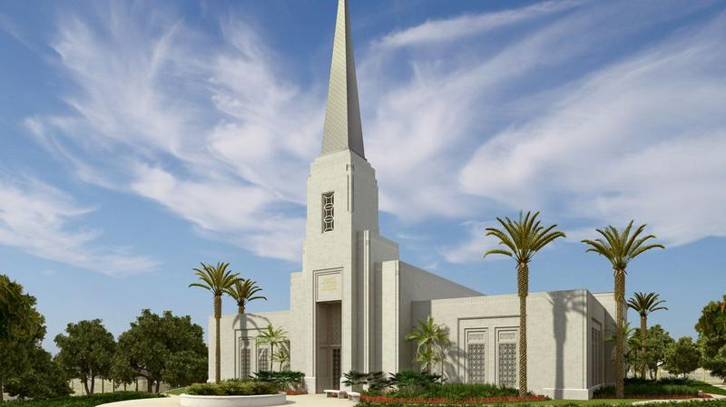
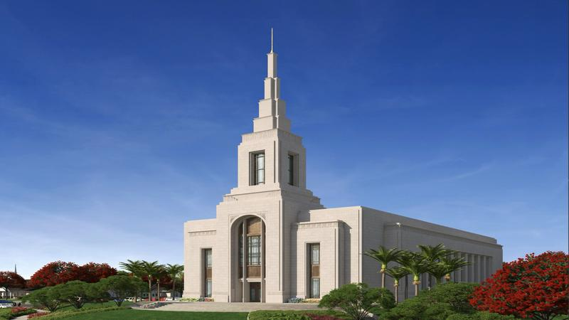
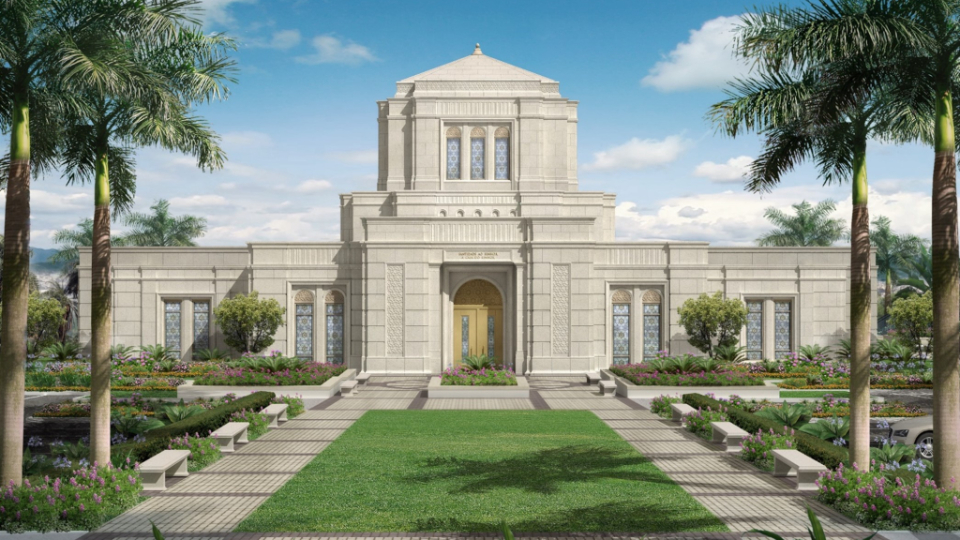
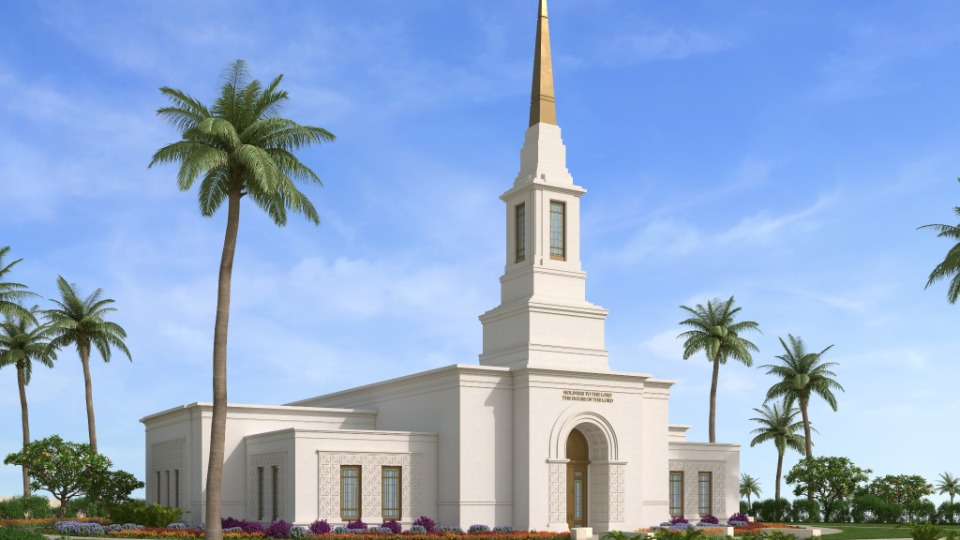
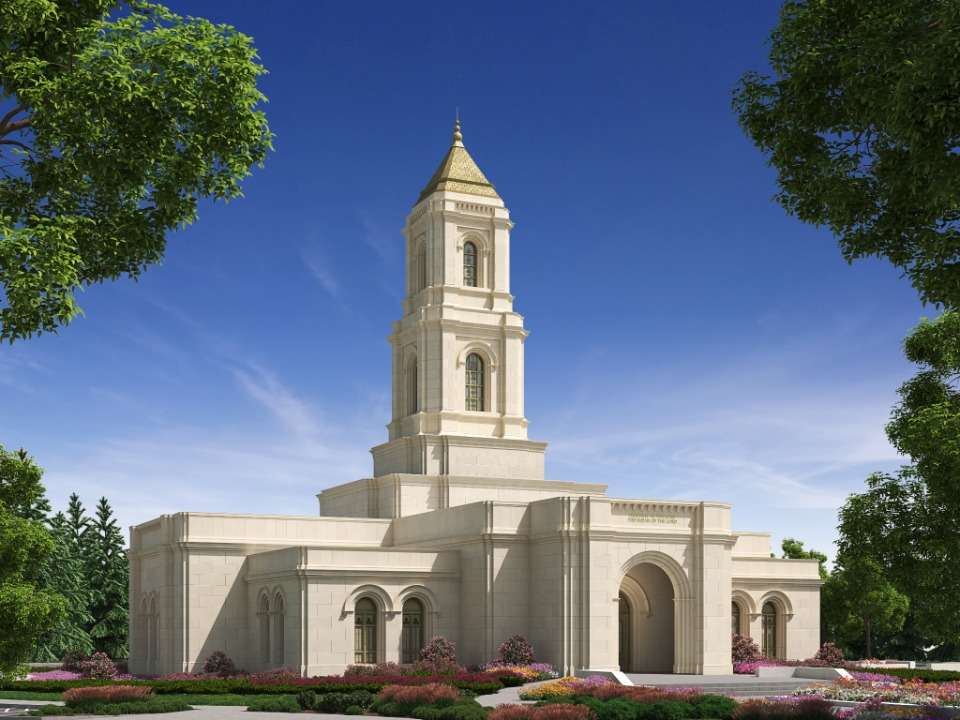
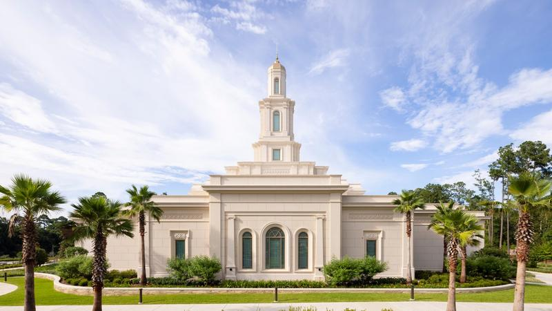
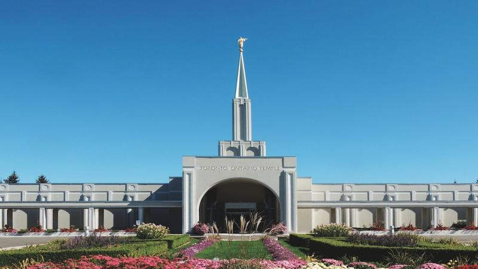
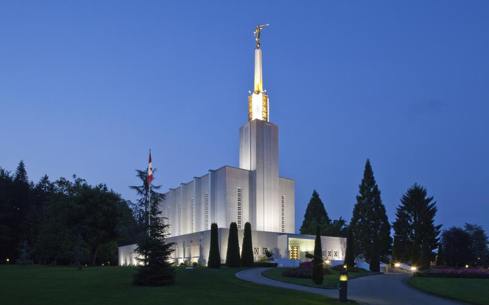
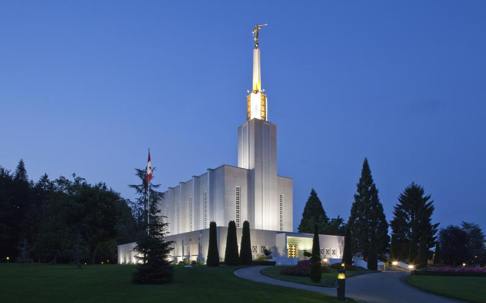

Home

Abidjan, Ivory Coast Temple

Auckland, New Zealand Temple Resized

Belo Horizonte Exterior Rendering

Port Moresby Papua, New Guinea Temple Exterior Rendering

Rendering of Cody Wyoming Temple

Tallahassee, Florida Temple

Toronto Ontario Temple Resized
 Albuquerque Temple Wallpaper
Albuquerque Temple Wallpaper
 Arequipa Peru Temple

Bern, Switzerland Temple Wallpaper
Arequipa Peru Temple

Bern, Switzerland Temple Wallpaper